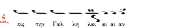

Η σημειογραφία του Σίμωνος Καρά / The notation of Simon Karas
Κριτική θεώρηση / An evaluation
Το Θέμα
O Σίμων Καράς [
html] πρότεινε την συμπλήρωση της σημειογραφίας των Τριών Διδασκάλων με ένα αριθμό από σημάδια το σχήμα και το όνομα των οποίων
αυτός δανείστηκε από την παλαιότερη σημειογραφία του Πέτρου Λαμπαδαρίου (πρό των
Τριών Διδασκάλων). Συγκεκριμένα την Οξεία, το Τρομικόν, το Στρεπτόν, το Λύγισμα,
το Πίεσμα, την Παρακλητική και το Μικρό Ίσον (Ισάκι). Για περισσότερες πληροφορίες
βλέπε στο Θεωρητικό βιβλίο του Σίμωνος Καρά [αναφορές αναμένονται]. Μιά περίληψη
του ιστορικού της υπόθεσης και του σκεπτικού του Καρά στο συγκεκριμένο θέμα δίνεται
από τον Άρχοντα Διδάσκαλο του Αποστόλου Δημήτριο Νεραντζή σε άρθρο του με παραδείγματα
[
html].
Από το πιό πάνω άρθρο μεταφέρουμε ένα παράδειγμα που δείχνει τη συμπλήρωση της απλής
γραφής των Τριών Διδασκάλων
με τα σημάδια που πρότεινε ο Σίμων Καράς. Εδώ φαίνεται το πίεσμα, το λύγισμα και
η οξεία:
Ο σκοπός αυτής της συμπλήρωσης δέν ήταν γενικά η αναβίωση την ενέργειας των σημαδιών
αυτών όπως είχε στην παλαιότερη μέθοδο αλλά να υπενθυμίσει στον ψάλλοντα από ένα
κλασσικό κείμενο τον τρόπο προφορικής ερμηνείας (έκφρασης) των διαφόρων θέσεων και
σημαδιών. Κάποιες φορές ίσως να τύχαινε να συμπίπτει η ερμηνεία αυτή με την ενέργεια
του σημαδιού στην παλαιά μέθοδο, αλλά όχι πάντα. Η χρησιμοποίηση των προτεινόμενων
σημαδιών αυτών προβάλεται από τους μαθητές του ως "δυνητική" και όχι δεσμευτική
προς τον ψάλλοντα.
Για να προτείνει τη συμπλήρωση της σημειογραφίας, ο Καράς υποκινήθηκε από το γεγονός
οτι πολλοί ψάλται του 20ου αιώνα υποστήριζαν οτι ψάλλουν "ότι βλέπουν στο βιβλίο" και οτι η προφορική παράδοση της Κωνσταντινουπόλεως και του Αγίου Όρους (που ανέλυε
τα κλασσικά κείμενα) ήταν επηρρεασμένη από την έξωτερική μουσική (π.χ. βλέπε κριτική
του Κ. Ψάχου στον τρόπο ανάλυσης των μουσικών κειμένων των Πατριαρχικών Ψαλτών,
περιοδικό Φορμιγξ, αναφορά αναμένεται). Τον παρακίνησε επίσης και η τάση εγκατάλειψης
των κλασσικών κειμένων από τους περισσότερους ψάλτες (ακόμα και από Πατριαρχικούς)
και οι διαστάσεις που έπαιρνε το φαινόμενο της αυθαίρετης ανάλυσης των κλασσικών
κειμένων από Θεσσαλονικείς -κυρίως- ψάλτες. Επίσης υποκινήθηκε από το γεγονός οτι
η σημειογραφία των Τριών Διδασκάλων φαινόταν φτωχή και λειψή συγκριτικά με την προηγούμενη
γραφή του Πέτρου Λαμπαδαρίου. Την ίδια παρατήρηση είχε κάνει και ο Άρχων Δομέστικος
Άγγελος Βουδούρης αρκετά χρόνια πρίν τον Καρά, παρατήρηση που τον οδήγησε να προτείνει
και αυτός ένα νέο τρόπο γραφής (ο οποίος όμως δεν διέφερε και πολύ από αυτόν των
Τριών δασκάλων) [
html]. Και είναι γνωστό οτι αρκετοί Πατριαρχικοί ψάλτες συνέχισαν να χρησιμοποιούν την γραφή του Πέτρου αντί για αυτήν
των Τριών Δασκάλων μετά τη μεταρρύθμιση του 1814, προφανώς θεωρώντας την ανώτερη
και καταλληλότερη για την Ψαλτική (και για άλλους λόγους φυσικά). Στο άρθρο του
Δημητρίου Νεραντζή πιο πάνω αναφέρεται οτι ο δάσκαλός του Αθανάσιος Παναγιωτίδης
χαρακτήριζε τη γραφή των Τριών Διδασκάλων σαν "το πτώμα της Βυζαντινής Μουσικής".
Την έρευνα του Καρά ώς προς τα σημάδια προσπάθησε να διαδώσει και να τεκμηριώσει
με ηχητικά παραδείγματα από την προφορική παράδοση (καθώς ο Καράς δεν το έκανε)
ο μαθητής του, Άρχων Πρωτοψάλτης της Α. Α. Κωνσταντινουπόλεως Λυκούργος Αγγελόπουλος
με σχετικό βιβλιάριο και κασέτα [
htm].
Αρκετά χρόνια αργότερα, ο Άρχων Διδάσκαλος του Αποστόλου Δημήτριος Νεραντζής εξέδωσε
βιβλίο στο οποίο μελετά (με πολλά παραδείγματα και συγκριτικές αναφορές) τη σχέση
της γραφής των Τριών Διδασκάλων σε σχέση με την προφορική παράδοση κάτω από το φώς
της έρευνας του Καρά. Μια περίληψη του σκεπτικού του βιβλίου δίνεται σε αυτό το
άρθρο του κ. Νεραντζή [
html].
Αν και αναγνωρίζει την αναγκαιότητα συμπλήρωσης της γραφής με τα σημάδια που πρότεινε
ο Καράς, προτιμά μιά αναλυτική γραφή με γνώση της ενέργειας των σημαδιών ώστε να
διαφυλλάτεται η προφορική παράδοση. Αυτό το κάνει με τη δικαιολογία οτι οι σύγχρονοι
ψάλτες προτιμούν την αναλυτική από τη συνεπτυγμένη γραφή.
Η προτεινόμενη επέκταση της γραφής του Σίμωνα Καρά δεν βρήκε απήχηση στο ευρύ Ψαλτικό
κοινό. Κυκλοφορεί επίσης η φήμη οτι η συμπληρωμένη γραφή υποβλήθηκε στο Πατριαρχείο
και απορρίφθηκε αλλά δεν έχουμε στοιχεία που να αποδεικνύουν κάτι τέτοιο. Ο πιό
γνωστός εκτός του ευρύτερου κύκλου των μαθητών του Καρά που υιοθέτησε δύο μόνο από
τα προτεινόμενα σημάδια (την οξεία και το λύγισμα) τα οποία χρησιμοποιεί με το δικό
του τρόπο είναι ο καθηγητής Γρηγόριος Στάθης (παράδειγμα [
doc, 83 Kb]). Άμεσος μαθητής του Καρά, ο Ιωάννης Αρβανίτης χρησιμοποιεί μόνο την Οξεία
το πίεσμα και το λύγισμα και φαίνεται να εκφράζει αντιρρήσεις για την αντιμετώπιση
των νέων σημαδιών από τους ψάλτες (όπως ο ίδιος περιγράφει στην εισαγωγή του Ακαθίστου
Ύμνου του [
gif, 100 Kb]). Τα νέα σημάδια είναι επίσης διαθέσιμα και από κάποιες γραμματοσειρές Βυζαντινής
Μουσικής όπως π.χ. η Stathis Series (παράδειγμα [
doc, 83 Kb]), η ΕΖ Psaltica [
html]
(και σχετικό παράδειγμα με τα νέα σημάδια [
pdf])
ο Βυζαντινογράφος [
html] (και σχετικό
παράδειγμα με σύμβολα παλαιάς παρασημαντικής [
pdf])
και άλλα. Σε κάποιες ακραίες περιπτώσεις, η πρόταση επέκτασης της γραφής έγινε αφορμή
να κατηγορηθεί ο Καράς σαν νεωτεριστής και εξω-παραδοσιακός, που "τόλμησε" να προτείνει
κάτι "διαφορετικό" από τους Τρείς Δασκάλους και την Πατριαρχική Επιτροπή. Την ίδια
στιγμή, οι ίδιοι χρησιμοποιούν άλλα νεωτεριστικά σημάδια π.χ. κορώνα, υφέν, σιγά,
δυνατά χωρίς πρόβλημα. Δυστυχώς, παρά τις αγενείς και πολλές φορές αβάσιμες κατηγορίες
σαν αυτή πιό πάνω δέν βρίσκεται κάποια αντικειμενική μελέτη του κατά πόσον η πρόταση
του Καρά σε σχέση με τη σημειογραφία είναι χρήσιμη ή όχι. Σε αυτή τη σελίδα προσπαθούμε
να εξετάσουμε ακριβώς αυτό.
Θετικά
Κατά τη γνώμη των συγγραφέων του Αναλογίου, η πρόταση του Καρά για επέκταση της
σημειογραφίας είναι χρήσιμη για τους πιό κάτω λόγους:
Βοηθά τη μελέτη, την παρουσίαση και συζήτηση διαφόρων μουσικών θεμάτων που έχουν
να κάνουν με την εκτέλεση των διαφόρων θέσεων. Π.χ. τη χρησιμοποιήσαμε στην ανάλυση
του δοξαστικού "Της Μετανοίας" [
html].
Περιγράφει την ανάλυση των συνεπτυγμένων θέσεων χωρίς να τις μεταγράφει σε άλλη
αναλυτικότερη γραφή και έτσι αποφέυγει τον κίνδυνο αλλοίωσης του παραδοσιακού μέλλους
προς χάριν "καλλωπισμών" ή προσωπικών αποδόσεων.
Βοηθά στη σωστή (παραδοσιακή) ανάλυση της συνοπτικής γραφής όταν αυτή απαιτείται
για κάποιο λόγο.
Υπενθυμίζει σε όσους κάνουν "απλή ανάγνωση" (και αγνοούν πολλές φορές τα ποιοτικά
σημεία) οτι υπάρχει και εκτέλεση που δέν γράφεται από τους Τρείς Διδασκάλους.
Όταν δεν παρεξηγείται και δεν καταντά νοητική διαδικασία, βοηθά στο να γνωρίζει
ο ψάλτης "τί ψάλλει" όταν εκτελεί κάποιες θέσεις. Π.χ. εδώ εκτελώ "Οξεία", εδώ εκτελώ
"μικρό ίσο" κ.τ.λ. Βεβαίως και χωρίς αυτά τα ονόματα οι ψάλτες περιέγραφαν τέτοιες
ενέργειες αλλά όχι με κάποιο συστηματικό και σαφή τρόπο (π.χ. έλεγαν οτι αυτό εκτελείται
"ζωηρά/ενωμένα" ή "με έμφαση/αέρα" ή "το σπάς" κ.τ.λ.).
Φέρνει τη γραφή των Τριών διδασκάλων πιό κοντά σε αυτή του Πέτρου σε κάποιες περιπτώσεις
(εκπληρώνοντας έτσι τον πόθο του Άγγελου Βουδούρη αρκετά χρόνια αργότερα από αυτόν).
Π.χ. σε θέσεις της παλαιάς γραφής με Οξεία
που δεν διατηρήθηκε στη Νέα Μέθοδο
Βοηθά στην καλύτερη κατανόηση κάποιων στοιχείων της γραφής του Πέτρου Λαμπαδαρίου,
χρήσιμο για τους ερευνητές της μουσικής μας.
Βοηθά στην παραδοσιακότερη (ιστορικά) εμφάνιση των μουσικών κειμένων π.χ. γράφοντας
το ολίγον με το σχήμα της Οξείας σε κάποιες περιπτώσεις (όπως φαίνεται να το ήθελαν
οι Τρείς Δάσκαλοι και όπως τη χρησιμοποίησε ο Πέτρος Εφέσιος στις εκδόσεις του).
[περισσότερα αναμένονται]
Αρνητικά
Κατά τη γνώμη των συγγραφέων του Αναλογίου, η πρόταση του Καρά για επέκταση της
σημειογραφίας αποτυγχάνει για τους πιό κάτω λόγους:
Περιορίζει τον ψάλτη σε μία ή μερικές μόνο εκτελέσεις π.χ. του ολίγου/κεντήματα/ψηφιστόν
γεγονός που είναι αντίθετο με τη φιλοσοφία της γραφής των Τριών Διδασκάλων και σχεδόν
ισοδύναμο με την ανάλυση της μουσικής φράσης. Μία θέση μπορεί να εκτελεστεί με πολλούς
διαφορετικούς τρόπους όπως φαίνεται και από το πιό κάτω παράδειγμα του Δημητρίου
Νεραντζή. Ποιό από όλα τα πιθανά σημάδια θα χρησιμοποιήσει ένας μελοποιός χωρίς
να περιορίσει τις άλλες δυνατές εκτελέσεις;

Δέν υπάρχουν (στην προφορική παράδοση) κανόνες που να καθορίζουν πότε χρησιμοποιείται
ένα σημάδι και πότε όχι (παραδείγματα για την Οξεία [
html]). Η τοποθέτηση των σημαδιών σε θέσεις που δέν δικαιολογούνται από την προφορική παράδοση
οδηγεί σε μή παραδοσιακή εκτέλεση. Π.χ. ο Δημήτριος Νεραντζής διαφωνεί με την τοποθέτηση
της παρακλητικής στην κατάληξη του Πασαπνοαρίου του Τετάρτου Στιχηραρικού Ήχου στη
συλλαβή "Τω [Θεω]" με την αιτιολογία οτι δεν δικαιολογείται τέτοια έμφαση στο άρθρο
"Τώ" [από σεμιναριακή διδασκαλία].
Επειδή και αυτή η επεκτεταμένη γραφή προϋποθέτει διαφορετικές ερμηνείες του ίδιου
σημαδιού π.χ. του Τρομικού ή της Οξείας (βλ. σχετική σελίδα με παραδείγματα [
html]). η ομοιόμορφη εκτέλεση από μία χορωδία δεν μπορεί να υπάρξει εκτός και άν τυποποιηθεί
ο τρόπος εκτέλεσης των σημαδιών (βλέπε και πιό κάτω). Αυτό ακριβώς παρατηρείται
σε γνωστές χορωδίες όπως η χορωδία του Σίμωνος Καρά και άλλες [
html].
Αθέλητα συμβάλλει στην ομογενοποίηση και τυποποίηση ενός μικρού αριθμού αναλύσεων
και στον εξαφανισμό άλλων οι οποίοι θυσιάζονται (αθέλητα) προς χάριν της ομοιόμορφης
εκτέλεσης μιας χορωδίας. Όπου ζητείται ομοιόμορφη χορωδιακή εκτέλεση, επι τόπου
αναλύσεις συνεπτυγμένων θέσεων μπορούν να σημειώνονται σε παρένθεση σύμφωνα με τις
προτιμήσεις του διευθυντή. Ακόμα καλύτερα, πολυχρόνια εμπειρία συμψαλμωδίας (όπως
π.χ. στις μοναστικές αδελφότητες του Αγίου Όρους) και εκ στήθους μάθηση είναι ο
παραδοσιακός τρόπος αυθόρμητης χορωδιακής εκτέλεσης.
Αθέλητα συμβάλλει στην μηχανική απόδωση των αναλύσεων λόγω της εκμάθησης των επιπλέον
σημαδιών σαν μικρές μελωδικές φράσεις, οπότε συνήθως χάνουν την ιδιαίτερη χάρη τους
όταν εκτελούνται ώς λαρυγγισμοί μαθημένοι με το αυτί.
Αθέλητα συμβάλλει στην απεξάρτηση από την προφορική παράδοση ("όλα" είναι γραμμένα)
και την υπερβολική εξάρτηση από τη γραπτή παράδοση. Έμπειροι ψάλτες συνήθως προτιμούν
να "βλέπουν" πιό λίγα και να "εκτελούν" περισσότερα. Μία από τις αιτιολογίες της
επέκτασης της γραφής είναι "ο ψάλτης να γνωρίζει τί ψάλλει" όσον αφορά τα ποιοτικά
σημεία. Αν και αυτό είναι θετικό από μία άποψη, παρόλ'αυτά εύκολα παρεξηγείται και
οδηγεί σε νοητική εκτέλεση (απλή ανάγνωση) παρά βιωματική απόδοση των ποιοτικών
σημείων.
Αχρηστεύει σε πολλές περιπτώσεις το ψηφιστόν θεωρώντας το σαν ένα σημάδι που μόνο
αφορά την ένταση του ήχου. Αυτό είναι αντίθετο με την παραδοσιακή εκτέλεση του ψηφιστού
από τους ψάλτες.
Κάνει τη διδασκαλία των σημαδιών και των ασκήσεων δυσκολότερη για τους αρχάριους.
Οι ποικίλες ενέργειες των σημαδιών πρέπει -όντως- να παρουσιάζονται και να εξηγούνται
στο μάθημα αλλά να αφήνονται στην προφορική διδασκαλία και στο "αυτί" και την "μουσική
αντίληψη" του μαθητή κατά την πολυετή διδασκαλία και εμπειρία στο ψαλτήρι ακούγοντας
ένα καλό δάσκαλο.
Δεν έχει νόημα η εφαρμογή της σε κλασσικά κείμενα και θέσεις που είναι ήδη αρκετά
αναλυτικά π.χ. αυτά του Πέτρου Εφεσίου ή ήδη αναλυτικά γραμμένες θέσεις στα κλασσικά
κείμενα.
Περιπλέκει την απλή και καθαρή γραφή των Τριών Διδασκάλων.
[περισσότερα αναμένονται]
The issue
The extended notation suggested by Karas was made popular in recent publications
by a number of psaltai, not only his students. Outside Karas' circle, the value
of the extended notation was recognised by Archon Didaskalos of the Apostle, Dimitrios
Nerantzis (who praises the extended notation in his book "Contribution to the Interpretation
of Byzantine Ecclesiastical Chant") and Prof. Gregorios Stathis (who uses a subset
of the proposed notation adapted to his own views). The extended signs have also
been included in some modern computer font packages (like EZ Psaltica from St. Anthony's
monastery, Stathis Series by the University of Athens and others [ref. pending]).
Although we acknowledge the usefulness of the extended notation in some cases, however
we identify a number of significant problems with it that we examine below [translation
of the Greek content above pending]. Note that even some of his students and followers
have not used the extended notation in their publications or have modified it according
to their views. There are are also (unverified) rumours that the Patriarchate has
officially rejected the extended notation when an official proposal was submitted
to it. On the issue of notation, see also page on the sign of Oxeia [
html] and the page of "Tis Metanoias" [
html].
{kind=link}